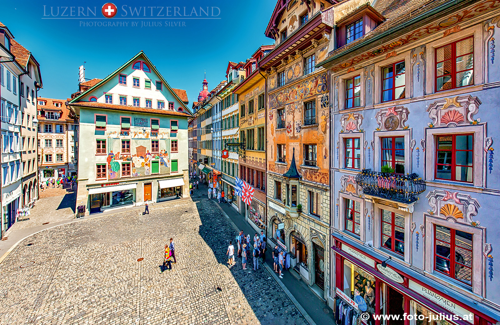
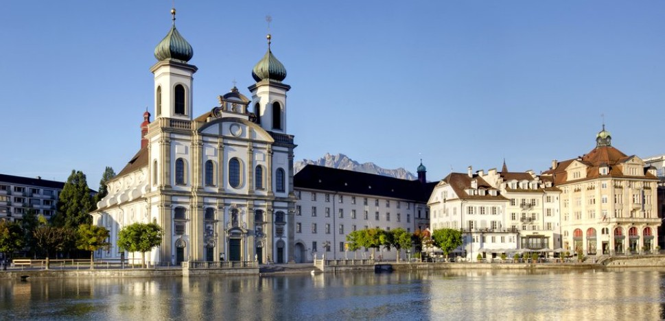
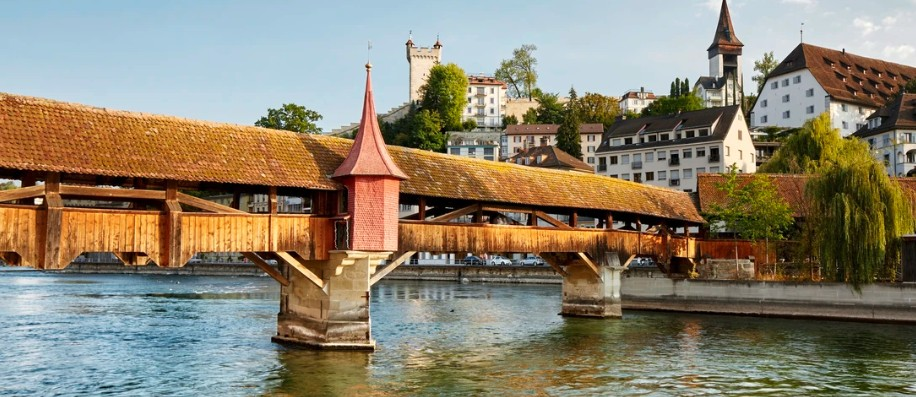
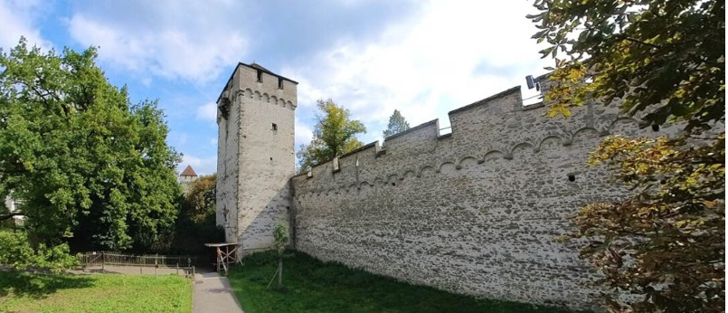
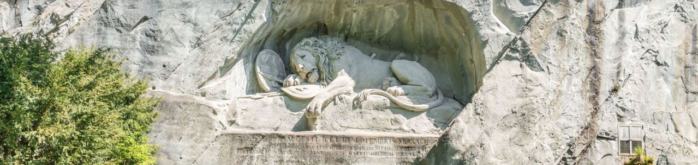

14. Luzern látogatás (sub program, gyalogos)
47.052786431137804, 8.308887104765335

Ajánlott sorrend: 1 → 2 → 3 → 4 → 5 → 6 → 7
1. Motor parkoló
Kiindulópont a gyalogos városnézéshez.
2. Kapellbrücke
3. Jesuitenkirche

4. Spreuerbrücke

5. Weinmarkt
6. Museggmauer

7. Löwendenkmal
